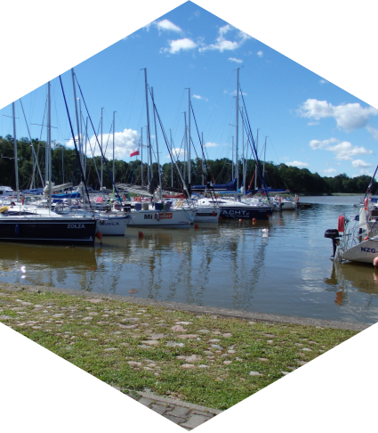
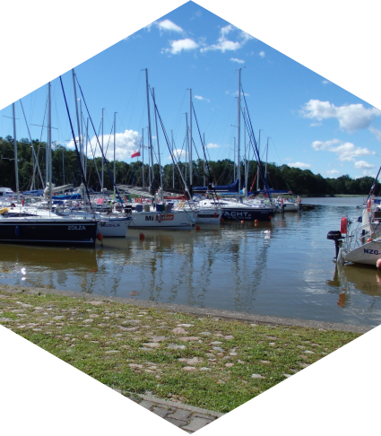

Na wakacjach, kiedy większość osób wybierała się na plażę
z powieściami czy magazynami, ja zawsze miałem ze sobą
zeszyt, gotów do rozpoczęcia matematycznych rozważań. Liczenie
macierzy na brzegu morza lub rozwiązując równania
trigonometryczne w cieniu palm – to były dla mnie chwile
prawdziwej przyjemności. Być może dla innych to brzmiało jak
nietypowa forma relaksu, ale dla mnie to było idealne połączenie
wypoczynku i pasji. Moje zeszyty stawały się nie tylko miejscem,
gdzie zapisywałem wyniki moich matematycznych eksploracji, ale
również świadectwem tego, jak jedna dziedzina nauki może
przenikać wszystkie aspekty mojego życia.
Nieoczekiwanie, to dzięki mojej pasji do matematyki bliżej
poznałem swoją przyszłą żonę. Nasza znajomość zaczęła się na
uniwersytecie, gdzie dzieliłem się z nią historiami o liczeniu
macierzy na brzegu morza.
Matematyka zawsze zajmowała szczególne miejsce w moim życiu, a
od zawsze szczególnie fascynowała mnie teoria liczb. Już w
czasach szkolnych, gdy większość uczniów skupiała się na
lekcjach, moje zainteresowanie matematyką wykraczało poza
standardowy program nauczania. Zamiast biernie słuchać wykładów,
zawsze wolałem zanurzyć się w zeszytach, gdzie mogłem rozwijać
swoje własne obliczenia i eksperymentować z różnymi koncepcjami
matematycznymi. Ta pasja do matematyki nie tylko dostarczała mi
ogromnej radości, ale także rozwijała moje umiejętności
logicznego myślenia i kreatywnego podejścia do rozwiązywania
problemów matematycznych. To właśnie to uwielbienie dla
matematyki stanowi dla mnie motywację do nieustannego zgłębiania
tej fascynującej dziedziny nauki.
W czasie lekcji polskiego czy historii, kiedy otoczenie było
wypełnione dźwiękiem słów i opowieści, ja zawsze znalazłem się w
swojej własnej matematycznej symfonii. Dla mnie, stukanie
kalkulatora było jak rytmiczna melodia, której dźwięki
komponowały się w mojej głowie podczas, gdy inni absorbowali
treści lekcji. Nie potrafiłem powstrzymać się od rozważań
matematycznych, nawet w zupełnie niezwiązanych z nimi
kontekstach.


 
